CS254 Visual Programming · Lecture 3 + Lab 3
GUI: Simple Components
Buttons, labels, text fields, password fields, dialogs, check boxes, radio buttons, combo boxes and lists. Every slide of Lecture 3 – GUI: Simple Components (55 slides) in order, with the code typed out from the screenshots and every window image, then Lab 3 with both of its code files. Small live demos sit inside the topics they explain.
Slides 1–8
Component properties and JButton
Introduction to JAVA GUI Programming 1
Component properties 2
Each has a get (or is) accessor and a set modifier method.
examples: getColor, setFont, setEnabled, isVisible
| name | type | description |
|---|---|---|
| background | Color | background color behind component |
| border | Border | border line around component |
| enabled | boolean | whether it can be interacted with |
| focusable | boolean | whether key text can be typed on it |
| font | Font | font used for text in component |
| foreground | Color | foreground color of component |
| height, width | int | component's current size in pixels |
| visible | boolean | whether component can be seen |
| tooltip text | String | text shown when hovering mouse |
| size, minimum / maximum / preferred size | Dimension | various sizes, size limits, or desired sizes that the component may take |
JButton 3
A JButton is a Swing component that represents a clickable button, used to trigger an action when clicked.
Constructors of JButton
| Constructor | Description |
|---|---|
JButton() | Creates an empty button with no text or icon. |
JButton(String text) | Creates a button with the specified text. |
JButton(Icon icon) | Creates a button with an image icon. |
JButton(String text, Icon icon) | Creates a button with both text and an image icon. |
Common Properties of JButton 4
| Property | Description |
|---|---|
setText(String text) | Sets the text displayed on the button. |
setIcon(Icon icon) | Sets an image as the button's icon. |
setEnabled(boolean enabled) | Enables or disables the button. |
setFont(Font font) | Sets the font style and size. |
setBackground(Color color) | Sets the background color. |
setForeground(Color color) | Sets the text color. |
setToolTipText(String text) | Displays a tooltip when hovering over the button. |
setMnemonic(char mnemonic) | Assigns a keyboard shortcut for the button. |
Common Methods of JButton 5
| Method | Description |
|---|---|
addActionListener(ActionListener listener) | Registers an event listener for button clicks. |
getText() | Returns the text of the button. |
setBounds(int x, int y, int width, int height) | Sets the button position and size (when using null layout). |
doClick() | Simulates a button click programmatically. |
setVisible(boolean visible) | Shows or hides the button. |
One and two buttons with setBounds 6
import javax.swing.*;
public class OneButtonExample {
public static void main(String[] args) {
JFrame frame = new JFrame("One Button Example");
JButton button = new JButton("Click Me");
button.setBounds(100, 100, 120, 40);
frame.add(button);
frame.setSize(300, 300);
frame.setLayout(null);
frame.setDefaultCloseOperation(JFrame.EXIT_ON_CLOSE);
frame.setVisible(true);
}
}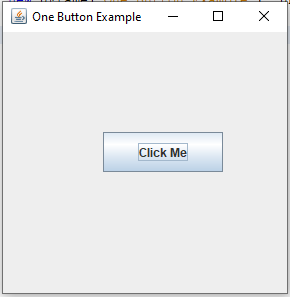
public class TwoButtonExample {
public static void main(String[] args) {
JFrame frame = new JFrame("Two Button Example");
JButton btn1 = new JButton("Say Hello");
JButton btn2 = new JButton("Exit");
btn1.setBounds(50, 100, 120, 40);
btn2.setBounds(180, 100, 120, 40);
frame.add(btn1);
frame.add(btn2);
frame.setSize(350, 300);
frame.setLayout(null);
frame.setDefaultCloseOperation(JFrame.EXIT_ON_CLOSE);
frame.setVisible(true);
}
}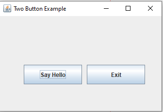
Three buttons 7
import javax.swing.*;
public class ThreeButtonExample {
public static void main(String[] args) {
JFrame frame = new JFrame("Three Button Example");
JButton btn1 = new JButton("Greet");
JButton btn2 = new JButton("Clear");
JButton btn3 = new JButton("Exit");
btn1.setBounds(30, 100, 100, 40);
btn2.setBounds(140, 100, 100, 40);
btn3.setBounds(250, 100, 100, 40);
frame.add(btn1);
frame.add(btn2);
frame.add(btn3);
frame.setSize(400, 300);
frame.setLayout(null);
frame.setDefaultCloseOperation(JFrame.EXIT_ON_CLOSE);
frame.setVisible(true);
}
}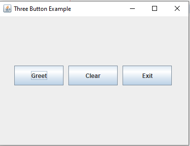
setBounds calls are highlighted on the slide: each button is placed by hand at x = 30, 140 and 250.Simple JButton Example 8
import java.awt.*; // Where is the other button?
import javax.swing.*;
public class ButtonExample {
public static void main(String[] args) {
JFrame frame = new JFrame();
frame.setDefaultCloseOperation(JFrame.EXIT_ON_CLOSE);
frame.setSize(new Dimension(300, 100));
frame.setTitle("A frame");
JButton button1 = new JButton();
button1.setText("I'm a button.");
button1.setBackground(Color.BLUE);
frame.add(button1);
JButton button2 = new JButton();
button2.setText("Click me!");
button2.setBackground(Color.RED);
frame.add(button2);
frame.setVisible(true);
}
}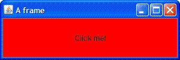
Slides 9–16
JLabel
JLabel 9
A JLabel is a Swing component used to display text, images, or both. It is non-editable and is commonly used for instructions, headings, or status messages in a GUI.
Constructors of JLabel
| Constructor | Description |
|---|---|
JLabel() | Creates an empty label with no text or icon. |
JLabel(String text) | Creates a label with the specified text. |
JLabel(Icon icon) | Creates a label displaying an image. |
JLabel(String text, int alignment) | Creates a label with text and alignment (e.g., SwingConstants.CENTER). |
JLabel(String text, Icon icon, int alignment) | Creates a label with text, an icon, and alignment. |
Common Properties of JLabel 10–11
| Property | Description | Slide |
|---|---|---|
setText(String text) | Changes the label's displayed text. | 10 |
getText() | Returns the current text of the label. | 10 |
setIcon(Icon icon) | Sets an image as the label's icon. | 10 |
setHorizontalAlignment(int alignment) | Aligns text horizontally (LEFT, CENTER, RIGHT). | 10 |
setVerticalAlignment(int alignment) | Aligns text vertically (TOP, CENTER, BOTTOM). | 10 |
setFont(Font font) | Changes the font style and size. | 11 |
setForeground(Color color) | Changes the text color. | 11 |
setBackground(Color color) | Changes the background color. | 11 |
setToolTipText(String text) | Displays a tooltip when hovering over the label. | 11 |
*setOpaque(boolean opaque) | Enables background color changes. makes the label transparent if b is false and nontransparent if b is true | 11 |
The possible values of alignment can be found in the class SwingConstants, e.g. use SwingConstants.CENTER to centre the text in the label.
*Note that labels are transparent by default and their background color is not visible. One sees the background color of the parent component shining through. To change the background color of a label one has to first make it opaque (non-transparent) using the method setOpaque.
Common Methods of JLabel 12
| Method | Description |
|---|---|
setText(String text) | Updates the label's text dynamically. |
setIcon(Icon icon) | Changes the label's image. |
setBounds(int x, int y, int width, int height) | Sets position and size (when using null layout). |
setHorizontalTextPosition(int position) | Positions text relative to an icon. |
setVerticalTextPosition(int position) | Positions text above, below, or beside an icon. |
One label 13
import javax.swing.*;
public class OneLabelExample {
public static void main(String[] args) {
JFrame frame = new JFrame("One Label Example");
JLabel label = new JLabel("Welcome to Java Swing!", SwingConstants.CENTER);
label.setBounds(50, 50, 200, 30);
frame.add(label);
frame.setSize(300, 200);
frame.setLayout(null);
frame.setDefaultCloseOperation(JFrame.EXIT_ON_CLOSE);
frame.setVisible(true);
}
}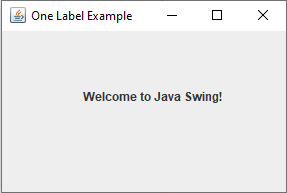
Three labels: colour, font and opaque background 14
import javax.swing.*;
import java.awt.*;
public class ThreeLabelExample {
public static void main(String[] args) {
JFrame frame = new JFrame("Three Label Example");
JLabel label1 = new JLabel("Left Aligned");
JLabel label2 = new JLabel("Center Aligned", SwingConstants.CENTER);
JLabel label3 = new JLabel("Right Aligned", SwingConstants.RIGHT);
label1.setBounds(30, 50, 150, 30);
label2.setBounds(30, 100, 150, 30);
label3.setBounds(30, 150, 150, 30);
label1.setForeground(Color.RED);
label2.setFont(new Font("Arial", Font.BOLD, 14));
label3.setOpaque(true);
label3.setBackground(Color.LIGHT_GRAY);
frame.add(label1);
frame.add(label2);
frame.add(label3);
frame.setSize(250, 250);
frame.setLayout(null);
frame.setDefaultCloseOperation(JFrame.EXIT_ON_CLOSE);
frame.setVisible(true);
}
}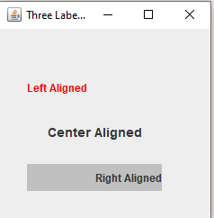
setOpaque(true).Simple JLabel Example 15–16
import java.awt.*;
import java.awt.event.*;
import javax.swing.*;
public class LabelTest extends JFrame {
private JLabel label1, label2, label3;
// set up GUI
public LabelTest()
{
super( "Testing JLabel" );
// get content pane and set its layout
Container container = getContentPane();
container.setLayout( new FlowLayout() );
// JLabel constructor with a string argument
label1 = new JLabel( "Label with text" );
label1.setToolTipText( "This is label1" );
container.add( label1 );
// JLabel constructor with string, Icon and alignment arguments
Icon bug = new ImageIcon( "bug1.gif" );
label2 = new JLabel( "Label with text and icon", bug,
SwingConstants.LEFT );
label2.setToolTipText( "This is label2" );
container.add( label2 );
// JLabel constructor no arguments
label3 = new JLabel();
label3.setText( "Label with icon and text at bottom" );
label3.setIcon( bug );
label3.setHorizontalTextPosition( SwingConstants.CENTER );
label3.setVerticalTextPosition( SwingConstants.BOTTOM );
label3.setToolTipText( "This is label3" );
container.add( label3 );Added · The end of the class, which the slides stop before
setSize( 275, 170 );
setVisible( true );
} // end constructor
public static void main( String args[] )
{
LabelTest application = new LabelTest();
application.setDefaultCloseOperation( JFrame.EXIT_ON_CLOSE );
}
} // end class LabelTestSlides 17–18
Null layout and setBounds
Why components disappear without setBounds 17
If you delete setBounds(), the labels (and buttons) will not be displayed because you are using null layout.
Why Does This Happen?
- By default, Swing components use
FlowLayout, which arranges components in a row with automatic sizing. - However, when you set
frame.setLayout(null);, you must manually specify the position and size of each component usingsetBounds(x, y, width, height). - Without
setBounds(), the components will have a default size of 0x0 pixels, making them invisible.
Solutions:
- Use a Layout Manager (recommended)
Instead of manually setting positions, useBorderLayout,GridLayout, orBoxLayoutfor automatic placement.
JFrame frame = new JFrame("Three Label Example");
JLabel label1 = new JLabel("Left Aligned");
JLabel label2 = new JLabel("Center Aligned", SwingConstants.CENTER);
JLabel label3 = new JLabel("Right Aligned", SwingConstants.RIGHT);
frame.setLayout(new FlowLayout());
label1.setForeground(Color.RED);
label2.setFont(new Font("Arial", Font.BOLD, 14));
label3.setBackground(Color.LIGHT_GRAY);
frame.add(label1);
frame.add(label2);
frame.add(label3);
frame.setSize(250, 250);
frame.setDefaultCloseOperation(JFrame.EXIT_ON_CLOSE);
frame.setVisible(true);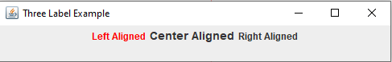
setBounds needed.Meaning of frame.setLayout(null); 18
The line frame.setLayout(null); in Java Swing removes the default layout manager, allowing you to manually position and size components using setBounds(x, y, width, height).
How It Works
- Without
nullLayout (Using Default Layout Manager)- The default layout manager (usually
BorderLayoutforJFrame) arranges components automatically. - Components may not appear where expected unless a layout manager is properly configured.
- The default layout manager (usually
- With
nullLayout (setLayout(null);)- The program does not automatically position components.
- You must use
setBounds(x, y, width, height);for each component. - If
setBounds()is missing, components may not appear (default size is 0x0).
frame.setLayout(null); // No layout manager button.setBounds(50, 50, 100, 30); // Manual position and size
frame.setLayout(null); // But no setBounds() frame.add(button); // Button has default size (0x0), may not be visible
Try it: setBounds on a null layout
AddedSlides 19–27
Text components
JTextField 19
A JTextField is a component that allows the user to enter a single line of text.
Properties:
- text: The text content inside the field.
- columns: The width of the text field in terms of characters.
- editable: Specifies whether the text field is editable or not.
Methods:
- setText(String text): Sets the text of the field.
- getText(): Retrieves the current text.
- setEditable(boolean editable): Enables or disables editing.
Example 1: Simple TextField
import javax.swing.*;
public class TextFieldExample1 {
public static void main(String[] args) {
JFrame frame = new JFrame("TextField Example");
JTextField textField = new JTextField("Enter text here", 20);
frame.add(textField);
frame.setSize(300, 200);
frame.setLayout(new FlowLayout());
frame.setDefaultCloseOperation(JFrame.EXIT_ON_CLOSE);
frame.setVisible(true);
}
}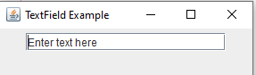
JTextArea (Multi-line Text Field) 20
The JTextArea class in Swing is used for multi-line text input and editing. It extends JTextComponent.
JTextArea Properties
| Property | Description |
|---|---|
text | Holds the text inside the text area. |
rows | Defines the number of visible rows. |
columns | Defines the number of visible columns. |
editable | Determines if the text area is editable (true) or read-only (false). |
lineWrap | Enables or disables automatic line wrapping. |
wrapStyleWord | Ensures that lines wrap at word boundaries when lineWrap is true. |
font | Sets the font style of the text. |
background | Sets the background color. |
foreground | Sets the text color. |
caretPosition | Gets or sets the caret (cursor) position. |
JTextArea Common Methods 21
| Method | Description |
|---|---|
setText(String text) | Sets text in the JTextArea. |
getText() | Returns the text inside the JTextArea. |
append(String str) | Appends text at the end. |
setEditable(boolean editable) | Enables or disables editing. |
setLineWrap(boolean wrap) | Enables/disables automatic line wrapping. |
setWrapStyleWord(boolean word) | Wraps at word boundaries when wrapping is enabled. |
select(int start, int end) | Selects a portion of text. |
replaceRange(String str, int start, int end) | Replaces text in a given range. |
setCaretPosition(int position) | Moves the cursor to a specific position. |
JScrollPane 22
a container that adds scrollbars around any other component
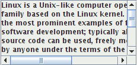
public JScrollPane(Component comp)
Wraps the given component with scrollbars.
After constructing the scroll pane, you must add the scroll pane, not the original component, to the onscreen container:
myContainer.add(new JScrollPane(textarea),
BorderLayout.CENTER);JTextArea in a JScrollPane 23
import javax.swing.*;
import java.awt.*;
public class JTextAreaExample {
public static void main(String[] args) {
JFrame frame = new JFrame("JTextArea Example");
frame.setSize(400, 300);
frame.setDefaultCloseOperation(JFrame.EXIT_ON_CLOSE);
JTextArea textArea = new JTextArea(10, 30);
textArea.setText("This is a JTextArea example.");
textArea.setLineWrap(true);
textArea.setWrapStyleWord(true);
JScrollPane scrollPane = new JScrollPane(textArea);
frame.add(scrollPane, BorderLayout.CENTER);
frame.setVisible(true);
}
}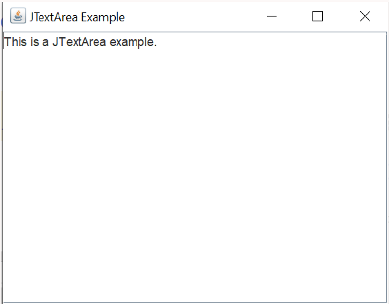
2. JPasswordField (Password Input Field) 24
JPasswordField is a subclass of JTextField designed for password input. Unlike JTextField, it hides input characters.
2.1 JPasswordField Properties
| Property | Description |
|---|---|
text | Holds the input text (not recommended for passwords). |
echoChar | Defines the character used to mask input (default: •). |
columns | Sets the width of the field in characters. |
editable | Determines if the field is editable (true or false). |
font | Sets the font style. |
background | Sets the background color. |
foreground | Sets the text color. |
2.2 JPasswordField Common Methods 25
| Method | Description |
|---|---|
setEchoChar(char c) | Sets the masking character. |
getPassword() | Returns the password as a char[] (safer than getText()). |
setText(String text) | Sets a default password (not recommended). |
setEditable(boolean editable) | Enables or disables input. |
setColumns(int columns) | Sets the width in terms of character count. |
- Setting echochar a value of 0 indicates that you wish to see the text as it is typed, similar to the behavior of a standard JTextField.
char getEchoChar(): Returns the character to be used for echoing.
JPasswordField example 26
import javax.swing.*;
import java.awt.*;
public class JPasswordFieldExample {
public static void main(String[] args) {
JFrame frame = new JFrame("JPasswordField Example");
frame.setSize(350, 200);
frame.setDefaultCloseOperation(JFrame.EXIT_ON_CLOSE);
frame.setLayout(new FlowLayout());
JLabel label = new JLabel("Enter Password:");
JPasswordField passwordField = new JPasswordField(15);
passwordField.setEchoChar('*'); // Masking with '*'
frame.add(label);
frame.add(passwordField);
frame.setVisible(true);
}
}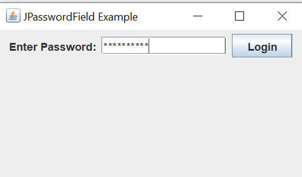
*. (The screenshot also has a Login button that the code doesn't create.)Try it: setEchoChar and getPassword
AddedJFormattedTextField 27
a text box that allows special formatting and can enforce constraints about allowable text
"Do this!" (handwritten on the slide)
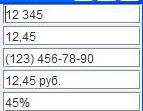
public JFormattedTextField(Format format)
Creates a new field that constrains itself to the given text format. (e.g. DateFormat, NumberFormat, CurrencyFormat, MaskFormat)
public Object getValue() public void getValue(Object value)
The value currently set in the field, which may lag behind the text.
public void setFocusLostBehavior(int b)
Sets what field should do if user stops editing and value is illegal.
Added · A small program for the "Do this!" note
import javax.swing.*;
import javax.swing.text.MaskFormatter;
import java.awt.*;
import java.text.NumberFormat;
public class FormattedFieldExample {
public static void main(String[] args) throws Exception {
JFrame frame = new JFrame("JFormattedTextField Example");
frame.setLayout(new GridLayout(3, 2, 5, 5));
JFormattedTextField numberField =
new JFormattedTextField(NumberFormat.getIntegerInstance());
numberField.setValue(12345);
JFormattedTextField percentField =
new JFormattedTextField(NumberFormat.getPercentInstance());
percentField.setValue(0.45); // shows 45%
MaskFormatter phoneMask = new MaskFormatter("(###) ###-##-##");
JFormattedTextField phoneField = new JFormattedTextField(phoneMask);
frame.add(new JLabel("Number:")); frame.add(numberField);
frame.add(new JLabel("Percent:")); frame.add(percentField);
frame.add(new JLabel("Phone:")); frame.add(phoneField);
frame.setSize(320, 150);
frame.setDefaultCloseOperation(JFrame.EXIT_ON_CLOSE);
frame.setVisible(true);
}
}In a mask, # means "one digit". Typing a letter in the phone field is refused, and numberField.getValue() returns a number, not text.
Slides 28–29
JOptionPane dialogs
JOptionPane 28
JOptionPane.showMessageDialog(parent, message);
import javax.swing.*;
JOptionPane.showMessageDialog(null,
"This candidate is a dog. Invalid vote.");Advantages:
- Simple; looks better than console.
Disadvantages:
- Created with static methods; not object-oriented.
- Not powerful (just simple dialog boxes).
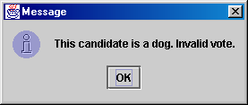
More JOptionPane 29
JOptionPane.showConfirmDialog(parent, message)
Displays a message and list of choices Yes, No, Cancel.
Returns an int such as JOptionPane.YES_OPTION or NO_OPTION to indicate what button was pressed.
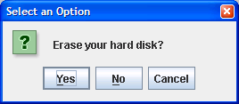
JOptionPane.showInputDialog(parent, message)
Displays a message and text field for input.
Returns the value typed as a String (or null if user presses Cancel).
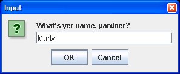
Try it: the three dialogs
Added// Click a button above
Slides 30–36
Check boxes, radio buttons and icons
JCheckBox 30
A JCheckBox represents a checkbox that can be selected or deselected.
public JCheckBox(String text) public JCheckBox(String text, boolean checked)
Properties:
- selected: Determines whether the checkbox is checked or not.
- text: Label displayed next to the checkbox.
Methods:
- setSelected(boolean selected): Selects or deselects the checkbox.
- isSelected(): Checks if the checkbox is selected.
- setText(String text): Sets the label of the checkbox.
JCheckBox example 31
import javax.swing.*;
public class CheckBoxExample1 {
public static void main(String[] args) {
JFrame frame = new JFrame("Checkbox Example");
JCheckBox checkBox = new JCheckBox("Accept Terms");
frame.add(checkBox);
frame.setSize(300, 200);
frame.setLayout(new FlowLayout());
frame.setDefaultCloseOperation(JFrame.EXIT_ON_CLOSE);
frame.setVisible(true);
}
}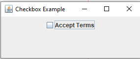
checkBox.setSelected(true);
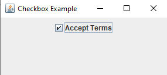
setSelected(true): ticked.JRadioButton 32
A JRadioButton is used to create a set of mutually exclusive selection buttons.
Properties:
selected: Determines if the button is selected.text: The label displayed next to the button.
Methods:
setSelected(boolean selected): Selects or deselects the button.isSelected(): Checks if the button is selected.setText(String text): Sets the label of the radio button.
public JRadioButton(String text)
ButtonGroup 33
a logical collection to ensure that exactly one radio button from a group is checked at a time
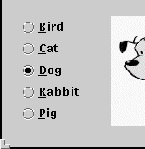
public ButtonGroup() public void add(JRadioButton button)
The ButtonGroup is not a graphical component, just a logical group; the RadioButtons themselves also need to be added to an onscreen container to be seen.
Try it: with and without a ButtonGroup
AddedIcon 34
a picture that can appear inside a component
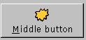
public class ImageIcon implements Icon public ImageIcon(String filename) public ImageIcon(URL address)
in JButton, JRadioButton, JCheckBox, JLabel, etc...
- constructor that takes an
Icon
public void setIcon(Icon) public void setSelectedIcon(Icon) public void setRolloverIcon(Icon)
Radio buttons in a group 35
import javax.swing.*;
public class RadioButtonExample2 {
public static void main(String[] args) {
JFrame frame = new JFrame("RadioButton Example");
JRadioButton option1 = new JRadioButton("Option 1");
JRadioButton option2 = new JRadioButton("Option 2");
ButtonGroup group = new ButtonGroup();
group.add(option1);
group.add(option2);
frame.setLayout(new FlowLayout());
frame.add(option1);
frame.add(option2);
frame.setSize(300, 200);
frame.setDefaultCloseOperation(JFrame.EXIT_ON_CLOSE);
frame.setVisible(true);
}
}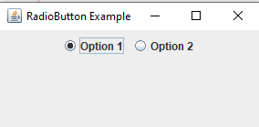
Two Groups of Radio Buttons 36
import javax.swing.*;
import java.awt.*;
public class TwoGroupsRadioButtonExample {
public static void main(String[] args) {
JFrame frame = new JFrame("Two Groups of Radio Buttons");
frame.setLayout(new FlowLayout());
// Group 1
JRadioButton group1Option1 = new JRadioButton("Group 1 - Option 1");
JRadioButton group1Option2 = new JRadioButton("Group 1 - Option 2");
ButtonGroup group1 = new ButtonGroup();
group1.add(group1Option1);
group1.add(group1Option2);
// Group 2
JRadioButton group2Option1 = new JRadioButton("Group 2 - Option 1");
JRadioButton group2Option2 = new JRadioButton("Group 2 - Option 2");
ButtonGroup group2 = new ButtonGroup();
group2.add(group2Option1);
group2.add(group2Option2);
// Adding to frame
frame.add(group1Option1);
frame.add(group1Option2);
frame.add(group2Option1);
frame.add(group2Option2);
frame.setSize(400, 200);
frame.setDefaultCloseOperation(JFrame.EXIT_ON_CLOSE);
frame.setVisible(true);
}
}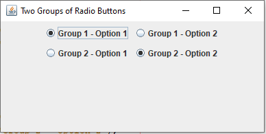
Slides 37–40
Building forms with nested panels
Multi-Layout Example 37–38
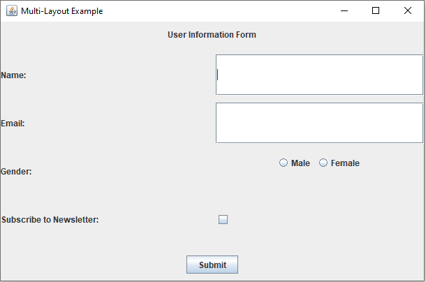
public class MultiLayoutExample {
public static void main(String[] args) {
JFrame frame = new JFrame("Multi-Layout Example");
frame.setLayout(new BorderLayout(10, 10));
// Top Panel using FlowLayout
JPanel topPanel = new JPanel(new FlowLayout(FlowLayout.CENTER, 10, 10));
topPanel.add(new JLabel("User Information Form"));
// Center Panel using GridLayout
JPanel centerPanel = new JPanel(new GridLayout(4, 2, 10, 10));
centerPanel.add(new JLabel("Name:"));
centerPanel.add(new JTextField(15));
centerPanel.add(new JLabel("Email:"));
centerPanel.add(new JTextField(15));
centerPanel.add(new JLabel("Gender:"));
JPanel genderPanel = new JPanel(new FlowLayout());
JRadioButton male = new JRadioButton("Male");
JRadioButton female = new JRadioButton("Female");
ButtonGroup genderGroup = new ButtonGroup();
genderGroup.add(male);
genderGroup.add(female);
genderPanel.add(male);
genderPanel.add(female);
centerPanel.add(genderPanel);
centerPanel.add(new JLabel("Subscribe to Newsletter:"));
centerPanel.add(new JCheckBox());
// Bottom Panel using FlowLayout
JPanel bottomPanel = new JPanel(new FlowLayout(FlowLayout.CENTER, 10, 10));
JButton submitButton = new JButton("Submit");
bottomPanel.add(submitButton);
// Adding Panels to Frame
frame.add(topPanel, BorderLayout.NORTH);
frame.add(centerPanel, BorderLayout.CENTER);
frame.add(bottomPanel, BorderLayout.SOUTH);
frame.setSize(400, 300);
frame.setDefaultCloseOperation(JFrame.EXIT_ON_CLOSE);
frame.setVisible(true);
}
}Login Form Example 39–40
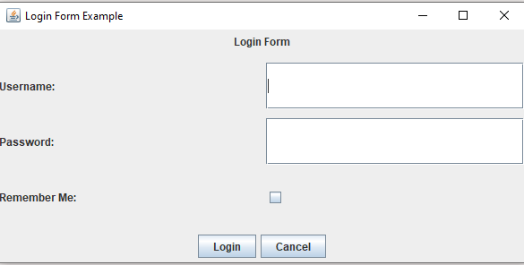
import javax.swing.*;
import java.awt.*;
public class LoginLayoutExample {
public static void main(String[] args) {
JFrame frame = new JFrame("Login Form Example");
frame.setLayout(new BorderLayout(10, 10));
// Top Panel using FlowLayout
JPanel topPanel = new JPanel(new FlowLayout());
topPanel.add(new JLabel("Login Form"));
// Center Panel using GridLayout
JPanel centerPanel = new JPanel(new GridLayout(3, 2, 10, 10));
centerPanel.add(new JLabel("Username:"));
centerPanel.add(new JTextField(15));
centerPanel.add(new JLabel("Password:"));
centerPanel.add(new JPasswordField(15));
centerPanel.add(new JLabel("Remember Me:"));
centerPanel.add(new JCheckBox());
// Bottom Panel using FlowLayout
JPanel bottomPanel = new JPanel(new FlowLayout());
JButton loginButton = new JButton("Login");
JButton cancelButton = new JButton("Cancel");
bottomPanel.add(loginButton);
bottomPanel.add(cancelButton);
// Adding Panels to Frame
frame.add(topPanel, BorderLayout.NORTH);
frame.add(centerPanel, BorderLayout.CENTER);
frame.add(bottomPanel, BorderLayout.SOUTH);
frame.setSize(350, 200);
frame.setDefaultCloseOperation(JFrame.EXIT_ON_CLOSE);
frame.setVisible(true);
}
}Slides 41–45
JComboBox and ComboBoxModel
JComboBox 41
a drop-down list of selectable items
public JComboBox() JComboBox(String[] listEntries) JComboBox(Vector[] listEntries)
Constructs a combo box.
int getItemCount() setMaximumRowCount(int rowCount) public void addActionListener(ActionListener al)
Causes an action event to be sent to listener al when the user selects or types a new item in the combo box.
- Displays a drop-down list of selectable items.
- Only one item can be selected at a time.
- Compact and saves space.
JComboBox (ComboBox) 42–43
The JComboBox component is a drop-down list allowing the user to select a single item.
Important Properties
- selectedItem: Returns or sets the currently selected item.
- itemCount: Returns the total number of items in the combo box.
- isEditable: Determines if the combo box allows text input.
Commonly Used Methods
| Method | What it does |
|---|---|
getSelectedIndex() | Returns the index of the selected item. |
getSelectedItem() | Returns the currently selected item. |
setSelectedIndex(int index) | Selects an item at the given index. |
setSelectedItem(Object item) | Selects an item based on value. |
addItem(Object item) | Adds a new item to the combo box. |
removeItem(Object item) | Removes an item from the combo box. |
removeAllItems() | Removes all items from the combo box. |
insertItemAt(Object item, int index) | Inserts an item at a specific index. |
getItemAt(int index) | Retrieves the item at the given index. |
getItemCount() | Returns the total number of items. |
setEditable(boolean editable) | Makes the combo box editable. |
public void setEnabled(boolean enabled) |
If editable, the user can type new arbitrary values into the box.
ComboBoxModel 44
- ComboBoxModel<E> is an interface in Swing that defines the data model for a JComboBox.
- It specifies how combo box items are stored, retrieved, and selected.
- DefaultComboBoxModel<E> is the default data model used by JComboBox.
- It stores the items displayed in the combo box and manages the selected item.
- It implements the MutableComboBoxModel<E> interface, which extends ComboBoxModel<E> and ListModel<E>
- it's both editable and notifies the combo box of changes automatically.
DefaultComboBoxModel<String> model = new DefaultComboBoxModel<>();
DefaultComboBoxModel<String> model = new DefaultComboBoxModel<>(
new String[] {"Apple", "Banana", "Cherry"}
);DefaultComboBoxModel example 45
import javax.swing.*;
public class ComboBoxModelExample {
public static void main(String[] args) {
// Create the combo box model
DefaultComboBoxModel<String> model = new DefaultComboBoxModel<>();
model.addElement("Apple");
model.addElement("Banana");
model.addElement("Cherry");
// Create the combo box using the model
JComboBox<String> comboBox = new JComboBox<>(model);
// Create and show the frame
JFrame frame = new JFrame("DefaultComboBoxModel Example");
frame.setDefaultCloseOperation(JFrame.EXIT_ON_CLOSE);
frame.add(comboBox);
frame.setSize(300, 150);
frame.setVisible(true);
}
}Slides 46–55
JList and DefaultListModel
JList 46
a list of selectable pre-defined text items

public JList()
Constructs an empty JList.
public JList(ListModel model) public JList(Object[] data) public JList(Vector data)
Constructs a JList that displays the given data.
public void addListSelectionListener(
ListSelectionListener lsl)Adds the given listener to be informed when the selected index changes for this list.
- Displays a list of items that can be selected.
- Allows single or multiple selections.
- Does not have a dropdown feature (it is always expanded).
List (ListBox) 47
The JList component displays a list of items that can be selected.
Important Properties
- selectionMode: Defines whether the list allows single or multiple selections.
- visibleRowCount: Controls how many rows are visible at a time.
- fixedCellHeight: Sets a fixed height for each row in the list.
- fixedCellWidth: Sets a fixed width for each row in the list.
- selectedIndex: Returns the index of the selected item.
- selectedValue: Returns the actual selected item.
Commonly Used Methods 48
| Method | What it does |
|---|---|
getSelectedIndex() | Returns the index of the selected item. |
getSelectedValue() | Returns the selected item. |
setSelectedIndex(int index) | Selects an item at the given index. |
setListData(Object[] data) | Replaces the list's items with a new array. |
setSelectionMode(int mode) | Sets the selection mode: SINGLE_SELECTION, SINGLE_INTERVAL_SELECTION, MULTIPLE_INTERVAL_SELECTION. |
clearSelection() | Clears the current selection. |
setEnabled(boolean enabled) | Enables or disables the list. |
getSelectedValue() | Returns the first selected item (if single selection) |
getSelectedValuesList() | Returns all selected items as a list |
getSelectedIndices() | Returns the indices of all selected items as int[] |
isSelectedIndex(int index) | Checks if a specific index is selected |
JList and JComboBox together 49–50
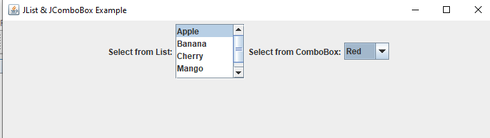
setSelectionMode).public static void main(String[] args) {
JFrame frame = new JFrame("JList & JComboBox Example");
frame.setSize(400, 300);
frame.setDefaultCloseOperation(JFrame.EXIT_ON_CLOSE);
frame.setLayout(new FlowLayout());
// **JList (ListBox)**
String[] listItems = {"Apple", "Banana", "Cherry", "Mango", "Orange"};
JList<String> listBox = new JList<>(listItems);
listBox.setSelectionMode(ListSelectionModel.SINGLE_SELECTION); // ←
JScrollPane listScrollPane = new JScrollPane(listBox);
listScrollPane.setPreferredSize(new Dimension(100, 80));
// **JComboBox (Drop-down)**
String[] comboItems = {"Red", "Green", "Blue", "Yellow"};
JComboBox<String> comboBox = new JComboBox<>(comboItems);
// **Add Components to JFrame**
frame.add(new JLabel("Select from List:"));
frame.add(listScrollPane);
frame.add(new JLabel("Select from ComboBox:"));
frame.add(comboBox);
// Make frame visible
frame.setVisible(true);
}List Model 51
- Interface ListModel<E>
- DefaultListModel<E> is a class that implements the ListModel<E> interface
- It stores elements in a list and automatically notifies any attached JList when items are added, removed, or changed.
- DefaultListModel() is the constructor which creates a list model without any entries.
DefaultListModel example 52
import javax.swing.*;
public class ListExample {
public static void main(String[] args) {
// Create a DefaultListModel
DefaultListModel<String> model = new DefaultListModel<>();
// Add elements
model.addElement("Apple");
model.addElement("Banana");
model.addElement("Cherry");
// Create a JList using the model
JList<String> list = new JList<>(model);
// Add the list to a scroll pane
JScrollPane scrollPane = new JScrollPane(list);
// Create a frame
JFrame frame = new JFrame("DefaultListModel Example");
frame.setDefaultCloseOperation(JFrame.EXIT_ON_CLOSE);
frame.add(scrollPane);
frame.setSize(300, 200);
frame.setVisible(true);
}
}DefaultListModel: Commonly Used Methods 53–55
| Method | Description | Example | Slide |
|---|---|---|---|
addElement(E element) | Adds an element to the end of the list. | model.addElement("Apple"); | 53 |
add(int index, E element) | Inserts an element at a specific position. | model.add(1, "Banana"); | 53 |
insertElementAt(E element, int index) | Same as add(index, element) — older method name. | model.insertElementAt("Cherry", 2); | 53 |
removeElement(Object obj) | Removes the first occurrence of the specified object. Returns true if found and removed. | model.removeElement("Apple"); | 54 |
remove(int index) | Removes the element at the specified index. | model.remove(0); | 54 |
removeElementAt(int index) | Same as remove(index) — older method name. | model.removeElementAt(2); | 54 |
removeAllElements() | Removes all items from the list. | model.removeAllElements(); | 54 |
clear() | Also removes all items (same effect as removeAllElements()). | model.clear(); | 54 |
setElementAt(E element, int index) | Replaces the element at a specific position. | model.setElementAt("Orange", 1); | 55 |
getElementAt(int index) | Returns the element at the given index. | String item = model.getElementAt(0); | 55 |
get(int index) | Same as above (added for ListModel compatibility). | String item = (String) model.get(0); | 55 |
contains(Object entry) | Returns true if the list contains the given object. | boolean hasItem = model.contains("Banana"); | 55 |
getSize() | Returns the total number of elements. | int count = model.getSize(); | 55 |
Try it: selection modes and the list model
AddedClick to select. Hold Ctrl (⌘ on Mac) to add items, Shift for a range.
Lab 3 · Abualhaj, Amer · plus the lab's code files (Dima Alshihan)
Lab 3: Introduction to JAVA GUI Programming
Task
Create a basic Sign-Up form, similar to the screenshot, as follows:
- Create a Project and name it SignUp.
- Add a title and name it Register Form.
- Add a Label "Register" at the top.
- In the center of the frame, use GridLayout (5 rows, 2 columns) to add the following:
- Label "Username" and a Text Field beside it.
- Label "Password" and a Password Field beside it.
- Label "Confirm Password" and another Password Field beside it.
- Label "Gender" and add two Radio Buttons: "Male" and "Female".
- Add a Check Box with text "Read the policy and agree".
- At the bottom, add a panel with two buttons: "Sign Up" and "Cancel".
- Arrange all components using panels with BorderLayout, FlowLayout, and GridLayout.
- Set the frame size to 500 × 400 (optional) and make it visible.
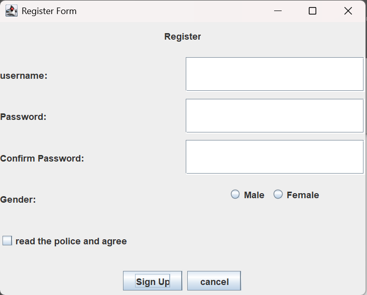
Your answer · Lab3.zip
Your Lab 3 answer
NetBeans project Signup, package com.mycompany.signup, one file. Everything is inside main, like the slide examples. The code is exactly as in your zip.
package com.mycompany.signup;
import javax.swing.*;
import java.awt.*;
public class Signup {
public static void main(String[] args) {
JFrame frame=new JFrame("Register Form.");
JPanel panelnorth=new JPanel();
JPanel panelgrid=new JPanel(new GridLayout(5,2));
JPanel genderpanel=new JPanel();
JPanel panelsouth=new JPanel();
JLabel label1=new JLabel("Register");
JLabel label2=new JLabel("Username");
JLabel label3=new JLabel("Password");
JLabel label4=new JLabel("Confirm Password");
JLabel label5=new JLabel("Gender");
JTextField field=new JTextField();
field.setSize(50,50);
JPasswordField password=new JPasswordField();
JPasswordField confirmpassword=new JPasswordField();
JRadioButton male= new JRadioButton("Male");
JRadioButton female=new JRadioButton("Female");
ButtonGroup gender=new ButtonGroup();
gender.add(male);
gender.add(female);
JCheckBox checkbox=new JCheckBox("Read the policy and agree");
JButton button1 =new JButton("Sign up");
JButton button2 =new JButton("Cancel");
genderpanel.add(male);
genderpanel.add(female);
panelnorth.add(label1);
panelgrid.add(label2);
panelgrid.add(field);
panelgrid.add(label3);
panelgrid.add(password);
panelgrid.add(label4);
panelgrid.add(confirmpassword);
panelgrid.add(label5);
panelgrid.add(genderpanel);
panelgrid.add(checkbox);
panelsouth.add(button1);
panelsouth.add(button2);
frame.add(panelnorth,BorderLayout.NORTH);
frame.add(panelsouth,BorderLayout.SOUTH);
frame.add(panelgrid,BorderLayout.CENTER);
frame.setVisible(true);
frame.setDefaultCloseOperation(JFrame.EXIT_ON_CLOSE);
frame.setSize(500, 400);
}
}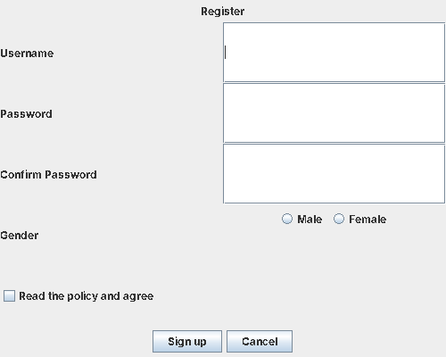
Explained
import javax.swing.*; import java.awt.*;
*imports every class of a package:javax.swingfor theJ...components,java.awtfor the layouts (GridLayout,BorderLayout).JFrame frame=new JFrame("Register Form.");- Creates the window. The String is the text in the title bar.
JPanel panelnorth=new JPanel(); JPanel genderpanel=new JPanel(); JPanel panelsouth=new JPanel();
- Three panels. A
JPanelmade without a layout uses FlowLayout by default (components in a centred row), so this is where the task's FlowLayout comes from. JPanel panelgrid=new JPanel(new GridLayout(5,2));
- The middle of the form: a GridLayout with 5 rows and 2 columns. Cells are filled left to right, top to bottom, in the order you call
add. JLabel label1=new JLabel("Register"); ... JLabel label5=new JLabel("Gender");- The five pieces of text that can't be edited.
JTextField field=new JTextField(); field.setSize(50,50);
- The username box.
setSizehas no effect here: the GridLayout decides every cell's size when the window is laid out, so the field always fills its cell. JPasswordField password=new JPasswordField(); JPasswordField confirmpassword=new JPasswordField();
- Password boxes: like a text field, but they show dots instead of the letters.
JRadioButton male= new JRadioButton("Male"); JRadioButton female=new JRadioButton("Female"); ButtonGroup gender=new ButtonGroup(); gender.add(male); gender.add(female);- Two radio buttons joined in a
ButtonGroup, so choosing one unselects the other. The group itself is invisible and is never added to a panel. JCheckBox checkbox=new JCheckBox("Read the policy and agree"); JButton button1 =new JButton("Sign up"); JButton button2 =new JButton("Cancel");- The check box and the two buttons. They don't do anything yet; reacting to clicks is Lecture 4.
genderpanel.add(male); genderpanel.add(female);
- A grid cell holds only one component, so both radio buttons go into one small panel, which then fills one cell.
panelnorth.add(label1); panelgrid.add(label2); panelgrid.add(field); ... panelgrid.add(genderpanel); panelgrid.add(checkbox);
- Fills the panels. The grid gets 9 components: four rows of label + component, then the check box in row 5, column 1. The tenth cell stays empty.
panelsouth.add(button1); panelsouth.add(button2);
- Both buttons side by side in the bottom panel.
frame.add(panelnorth,BorderLayout.NORTH); frame.add(panelsouth,BorderLayout.SOUTH); frame.add(panelgrid,BorderLayout.CENTER);
- A frame's content pane uses BorderLayout by default. This puts the title panel at the top, the buttons at the bottom and the grid in the middle, where it takes all the remaining space.
frame.setVisible(true); frame.setDefaultCloseOperation(JFrame.EXIT_ON_CLOSE); frame.setSize(500, 400);
- Shows the window, makes × end the program, and sets the size to 500 × 400. Because
setVisiblecomes first, the window appears at its tiny starting size and then grows; it's usually too fast to see, but callingsetSizebeforesetVisibleavoids it.
Added · Lab 3 solution
Show the solution: SignUp.java (one class, with its main at the bottom)
import javax.swing.*;
import java.awt.*;
public class SignUp extends JFrame {
public SignUp() {
super("Register Form");
setLayout(new BorderLayout(10, 10));
// NORTH: the heading
JPanel topPanel = new JPanel(new FlowLayout());
topPanel.add(new JLabel("Register"));
// CENTER: 5 rows x 2 columns
JPanel centerPanel = new JPanel(new GridLayout(5, 2, 10, 10));
centerPanel.add(new JLabel("Username:"));
centerPanel.add(new JTextField(15));
centerPanel.add(new JLabel("Password:"));
centerPanel.add(new JPasswordField(15));
centerPanel.add(new JLabel("Confirm Password:"));
centerPanel.add(new JPasswordField(15));
centerPanel.add(new JLabel("Gender:"));
JRadioButton male = new JRadioButton("Male");
JRadioButton female = new JRadioButton("Female");
ButtonGroup genderGroup = new ButtonGroup(); // only one can be picked
genderGroup.add(male);
genderGroup.add(female);
JPanel genderPanel = new JPanel(new FlowLayout()); // two buttons in one cell
genderPanel.add(male);
genderPanel.add(female);
centerPanel.add(genderPanel);
centerPanel.add(new JCheckBox("Read the policy and agree"));
centerPanel.add(new JLabel("")); // empty cell to finish the 5 x 2 grid
// SOUTH: the buttons
JPanel bottomPanel = new JPanel(new FlowLayout());
bottomPanel.add(new JButton("Sign Up"));
bottomPanel.add(new JButton("Cancel"));
add(topPanel, BorderLayout.NORTH);
add(centerPanel, BorderLayout.CENTER);
add(bottomPanel, BorderLayout.SOUTH);
setSize(500, 400);
setDefaultCloseOperation(JFrame.EXIT_ON_CLOSE);
setVisible(true);
}
public static void main(String[] args) {
new SignUp();
}
}Lab 3 code: ButtonTest.java
From the project file Lab 3 ButtonTest.txt. This is example code handed out with the lab, not the solution to the task above. It's a complete program on its own: its main is inside the class, right after the constructor. A plain button and a "fancy" button with an icon that changes when the mouse rolls over it. Clicking either shows which one you pressed.
/*
* Click nbfs://nbhost/SystemFileSystem/Templates/Licenses/license-default.txt to change this license
* Click nbfs://nbhost/SystemFileSystem/Templates/Classes/Class.java to edit this template
*/
package com.mycompany.simpleexample;
/**
*
* @author Dima.Alshihan
*/
import java.awt.*;
import java.awt.event.*;
import javax.swing.*;
public class ButtonTest extends JFrame{
private JButton plainButton, fancyButton;
// set up GUI
public ButtonTest()
{
super( "Testing Buttons" );
// get content pane and set its layout
Container container= getContentPane();
container.setLayout( new FlowLayout() );
// create buttons
plainButton= new JButton( "Plain Button" );
container.add( plainButton);
Icon s1 = new ImageIcon( "star2.png" );
Icon bug2 = new ImageIcon( "bug2.gif" );
fancyButton= new JButton( "Fancy Button", s1 );
fancyButton.setRolloverIcon( bug2 );
container.add( fancyButton);
// create an instance of inner class ButtonHandler
// to use for button event handling
ButtonHandler handler = new ButtonHandler();
fancyButton.addActionListener( handler );
plainButton.addActionListener( handler );
setSize( 275, 100 );
setVisible( true );
} // end ButtonTestconstructor
public static void main( String args[] )
{
ButtonTest application = new ButtonTest();
application.setDefaultCloseOperation( JFrame.EXIT_ON_CLOSE);
}
// inner class for button event handling
private class ButtonHandler implements ActionListener {
// handle button event
public void actionPerformed( ActionEvent event )
{
JOptionPane.showMessageDialog( ButtonTest.this, "You pressed: " + event.getActionCommand() );
}
} // end private inner class ButtonHandler
} // end class ButtonTestLab 3 code: TextFieldTest.java
From the project file Lab 3 -TextFieldTest.txt. Also example code from the lab, and also a complete program with its own main inside the class. Four fields; pressing Enter in any of them shows its text in a dialog.
/*
* Click nbfs://nbhost/SystemFileSystem/Templates/Licenses/license-default.txt to change this license
* Click nbfs://nbhost/SystemFileSystem/Templates/Classes/Class.java to edit this template
*/
package com.mycompany.simpleexample;
/**
*
* @author Dima.Alshihan
*/
import java.awt.*;
import java.awt.event.*;
import javax.swing.*;
public class TextFieldTest extends JFrame{
private JTextField textField1, textField2, textField3;
private JPasswordField passwordField;
// set up GUI
public TextFieldTest()
{
super( "Testing JTextFieldand JPasswordField" );
Container container= getContentPane();
container.setLayout( new FlowLayout() );
// construct textfieldwith default sizing
textField1 = new JTextField( 10 );
container.add( textField1 );
// construct textfieldwith default text
textField2 = new JTextField( "Enter text here" );
container.add( textField2 );
// construct textfieldwith default text,
textField3 = new JTextField( "Uneditabletext field", 20 );
textField3.setEditable( false );
container.add( textField3 );
// construct passwordfieldwith default text
passwordField= new JPasswordField( "Hidden text" );
container.add( passwordField);
// register event handlers
TextFieldHandler handler = new TextFieldHandler();
textField1.addActionListener( handler );
textField2.addActionListener( handler );
textField3.addActionListener( handler );
passwordField.addActionListener( handler );
setSize( 325, 100 );
setVisible( true );
} // end constructor TextFieldTest
public static void main( String args[] ){
TextFieldTest application = new TextFieldTest();
application.setDefaultCloseOperation( JFrame.EXIT_ON_CLOSE);
}
// private inner class for event handling
private class TextFieldHandler implements ActionListener {
// process textfieldevents
public void actionPerformed( ActionEvent event )
{
String string= "";
// user pressed Enter in JTextFieldtextField1
if ( event.getSource() == textField1 )
string = "textField1: " + event.getActionCommand();
// user pressed Enter in JTextFieldtextField2
else if ( event.getSource() == textField2 )
string = "textField2: " + event.getActionCommand();
// user pressed Enter in JTextFieldtextField3
else if ( event.getSource() == textField3 )
string = "textField3: " + event.getActionCommand();
// user pressed Enter in JTextFieldpasswordField
else if ( event.getSource() == passwordField) {
string = "passwordField: " +
new String( passwordField.getPassword() );
}
JOptionPane.showMessageDialog( null, string );
} // end method actionPerformed
} // end private inner class TextFieldHandler
} // end class TextFieldTestAll of Lecture 3 + Lab 3
Flashcards
Tap the card to flip it. Each answer names the slide it comes from.